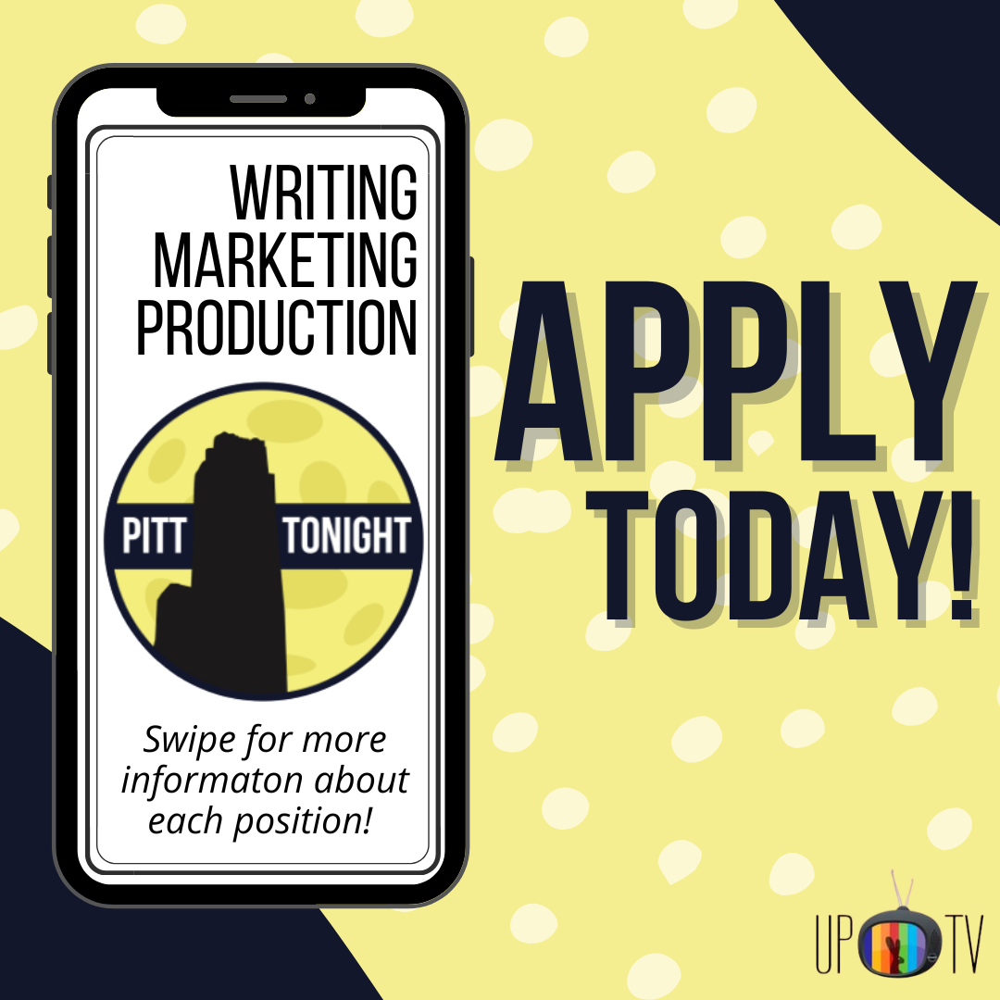
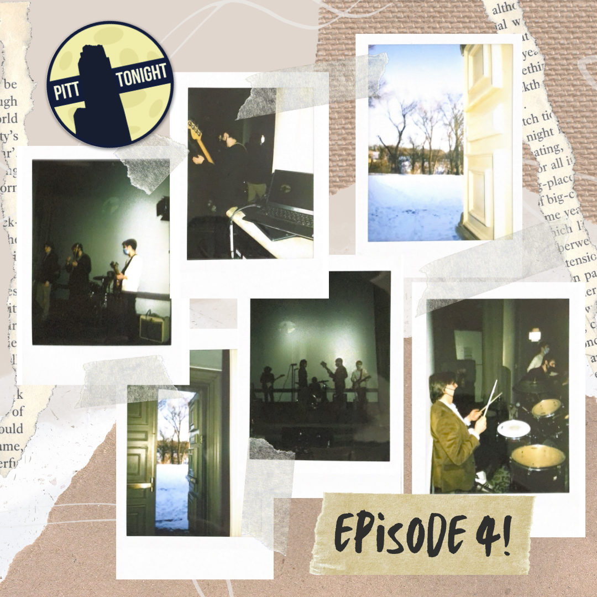
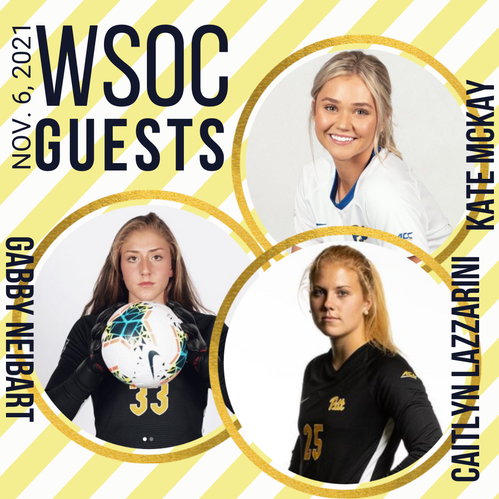
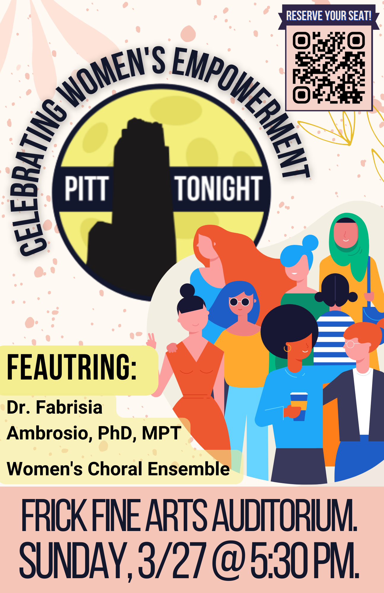
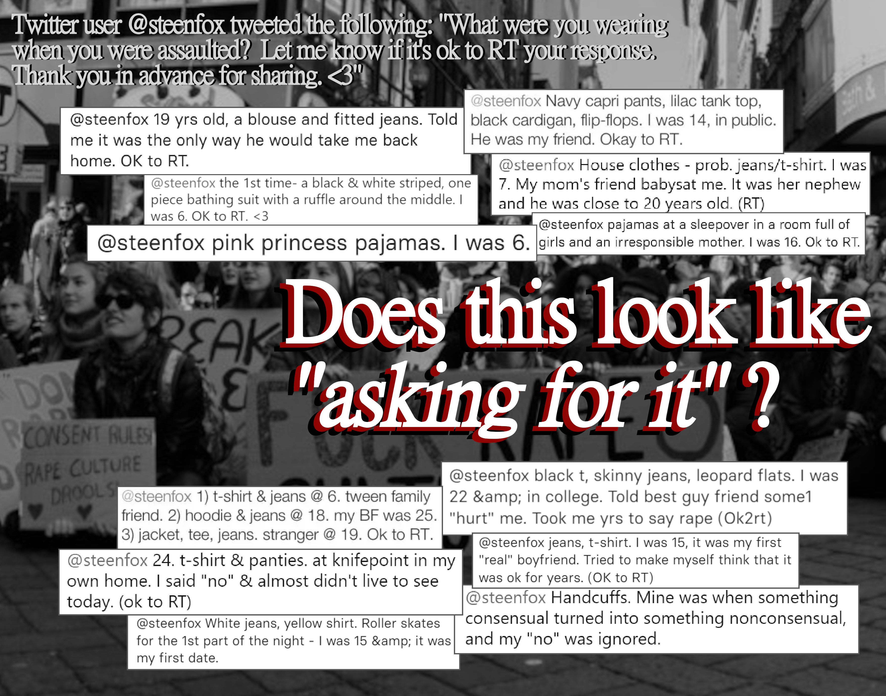

Here you can find some examples of Delaney's graphic design skills.
Pitt Tonight
The following are samples of Delaney's volunteer design work with the student-run late night talk show at the University of Pittsburgh, Pitt Tonight.
   
Additional Design Projects
Delaney finds pride in her attention to detail and aestheticism. For all projects she works on, she ensures perfectionism and clean, appealing designs. Check out additional miscellaneous design work below.
☆ LGBTQ+ Individuals in Catholic Schools, Presentation
In this presentation, Delaney summarizes the highlights found in her literature review of the same topic. The paper can be found here or with her other works under the Writing tab.
View a PDF of the presentation here.
☆ Visual Culture Journal, Presentation
For this project, Delaney was tasked with detailing intriguing visual culture items found in everyday life and media. To balance the various unique items captured, she designed the project with a minimalistic style.
View a PDF of the presentation here.
☆ Visual Argument Project
Inspired by an exhibit capturing outfits victims of assault wore at the time of their assault, Delaney used screenshots from a Twitter thread to highlight the harm involved in victim blaming, specifically in asking victims the question, "What were you wearing?"
